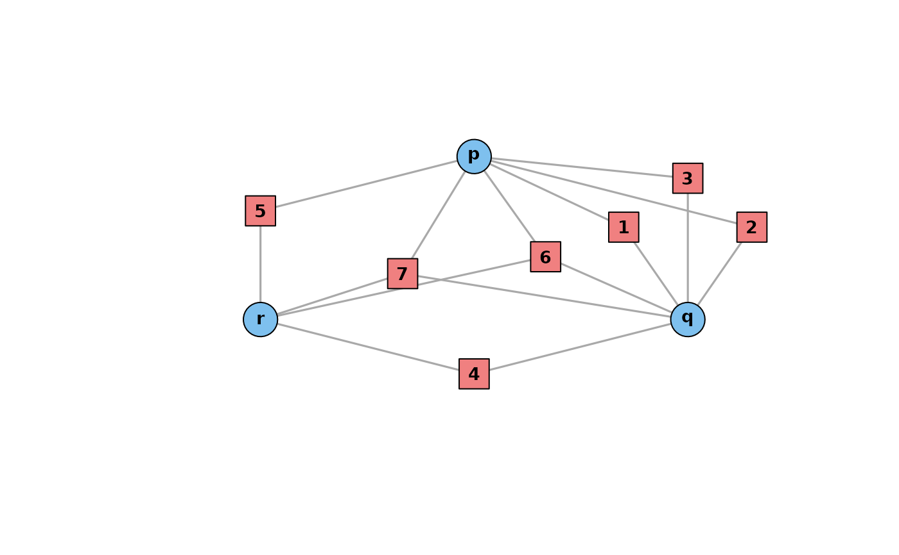

Affiliation network triads
triad.RdThese functions create and operate on triads in affiliation networks. In this context, a triad is the schedule of a subset of three distinct actors.
Usage
make_triad(
lambda,
w,
actor_names = c("p", "q", "r"),
event_names = if (sum(c(lambda, w)) == 0) c() else as.character(1:sum(c(lambda, w)))
)
is_triad(graph)
triad_class(
graph,
actors = V(graph)[V(graph)$type == FALSE],
as.partition = TRUE,
format = "list"
)
layout_triad(
triad = NULL,
lambda = NULL,
w = NULL,
scale = 0.3,
angdir = -1,
rot = -pi/2,
rot_lambda = c(0, 0, 0),
rot_w = pi/12
)
plot_triad(
triad = NULL,
lambda = NULL,
w = NULL,
layout = NULL,
prettify = TRUE,
cex = 1,
scale = 0.3,
angdir = -1,
rot = -pi/2,
rot_lambda = c(0, 0, 0),
rot_w = pi/12,
actor_names = c("p", "q", "r"),
event_names = if (sum(c(lambda, w)) == 0) c() else as.character(1:sum(c(lambda, w))),
xlim = NULL,
ylim = NULL,
...
)
an_triad(...)
is.triad(graph)
triad.class(
graph,
actors = V(graph)[V(graph)$type == FALSE],
as.partition = TRUE,
format = "list"
)
an.triad(...)
layout.triad(
triad = NULL,
lambda = NULL,
w = NULL,
scale = 0.3,
angdir = -1,
rot = -pi/2,
rot_lambda = c(0, 0, 0),
rot_w = pi/12
)
plotTriad(
triad = NULL,
lambda = NULL,
w = NULL,
layout = NULL,
prettify = TRUE,
cex = 1,
scale = 0.3,
angdir = -1,
rot = -pi/2,
rot_lambda = c(0, 0, 0),
rot_w = pi/12,
actor_names = c("p", "q", "r"),
event_names = if (sum(c(lambda, w)) == 0) c() else as.character(1:sum(c(lambda, w))),
xlim = NULL,
ylim = NULL,
...
)Arguments
- lambda
A non-negative integer vector of length three indicating the number of events attended by each pair of actors and not by the third (exclusive events).
- w
A non-negative integer indicating the number of events attended by all three actors (inclusive events).
- actor_names, event_names
Actor and event names (actor names default to "p", "q", and "r"; event names default to positive integers).
- graph
An affiliation network, in some cases must be a triad.
- actors
A vector of three actor nodes in
graph.- as.partition
Whether to sort the exclusive events, versus reporting them in order of the nodes; defaults to
TRUE.- format
Character matched to "list" or "vector"; whether to return the triad class as a list of \(\lambda=(x,y,z)\) and \(w\) or as a vector of \(w\), \(x=\lambda_1\), \(y=\lambda_2\), and \(z=\lambda_3\).
- triad
An affiliation network with exactly three distinct actors.
- scale
A scaling parameter for the entire plot.
- angdir
A rotation direction parameter (
-1for clockwise,1for counter-clockwise).- rot, rot_lambda, rot_w
Angular orientation parameters for the entire triad, for the exclusive events of two actors, and for the inclusive events of all three actors.
- layout
A two-column numeric matrix interpretable as a layout.
- prettify
Logical; whether to use
prettify_anto adjust the aesthetics of a triad before plotting it.- cex
Node size scaling parameter.
- xlim, ylim
Custom bounds on the horizontal and vertical axes.
- ...
Additional arguments passed to plot.igraph.
Value
An igraph object, a logical value, a matrix of plotting
coordinates, or a list of summary parameters lambda and w.
Examples
tr <- make_triad(lambda = c(3,1,1), w = 2)
is_triad(tr)
#> [1] TRUE
triad_class(tr)
#> $lambda
#> [1] 3 1 1
#>
#> $w
#> [1] 2
#>
layout_triad(tr)
#> [,1] [,2]
#> [1,] 6.123234e-17 1.00000000
#> [2,] 8.660254e-01 -0.50000000
#> [3,] -8.660254e-01 -0.50000000
#> [4,] 6.062178e-01 0.35000000
#> [5,] 1.125833e+00 0.35000000
#> [6,] 8.660254e-01 0.80000000
#> [7,] -1.836970e-16 -1.00000000
#> [8,] -8.660254e-01 0.50000000
#> [9,] 2.897777e-01 0.07764571
#> [10,] -2.897777e-01 -0.07764571
plot_triad(tr)
